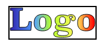

Логотип не отвечает или временно недоступен
- Содержание:
- Логотип фоном
- Логотип картинкой
- Инлайновый SVG
- Что лучше выбрать?
- Доступность для поисковиков
- Комментарии по работе с читалками:
Заинтересовалась вопросом: как лучше всего верстать логотипы на сайте? Как правильно и почему? Картинкой или фоном? Как логотип будет выглядеть при печати? Как обеспечить доступность для скринридеров и как сделать подсказки для поисковиков?
Спасибо всем участникам дискуссии за полезные комментарии : ) Я сделала несколько вариантов разметки, провела ряд тестов и узнала много интересного.
Есть разные способы вставить логотип на страницу:
- фоновой картинкой (обычно на элементе заголовка)
- обычной картинкой
- инлайновым SVG
Мне больше всего нравится вариант с фоновым изображением, заданным для H1. Почему именно этот? Потому что логотип обычно содержит название компании или сайта, и это название логично сделать главным заголовком на странице. Зачастую логотип — это просто красиво оформленное название, поэтому можно написать название текстом, а потом с помощью стилей оформления скрыть его и вместо него показать картинку. Помимо доступности текста для скринридеров, такой вариант разметки позволяет без проблем добавить какие-нибудь эффекты по наведению (например, менять картинку).
Вроде бы отличный способ, но нет. Логотип в этом случае невозможно скопировать или сохранить, а если пользователь просматривает страницу без картинок, вместо логотипа он увидит пустое место, то есть заголовок сайта окажется для него недоступен.
И тут возникает вопрос доступности. Что такое доступность? Для кого должен быть доступен логотип сайта? Обычно под доступностью подразумевается доступность веб-контента для людей с ограниченными возможностями, но я предлагаю посмотреть на вопрос немного шире, и подумать над доступностью логотипа:
- при плохом соединении с интернетом, когда на странице может не быть стилей или картинок;
- при печати страницы;
- для копирования;
- для поисковиков;
- для манипуляций с помощью CSS.
Мы привыкли к хорошему интернету, который есть практически везде, и можем думать, что так у всех, пока нам внезапно не потребуется срочно открыть какую-то страницу находясь в метро или, например, в отпуске, в отеле с полудохлым вайфаем. Если вы бывали в такой ситуации, наверняка отвалившиеся стили или недогрузившиеся картинки из разряда редких мифических существ для вас резко перешли в разряд острых насущных проблем. «Да кто вообще делал этот тормозной сайт?!». В общем, стили могли не доехать, а картинки могли быть отключены пользователем для экономии трафика и ускорения загрузки страниц. Такое случается.
С печатью всё более-менее понятно: иногда люди печатают страницы, и логотип при этом не должен превращаться в тыкву, особенно если одновременно он является названием сайта.
Вопрос копирования актуален для контент-менеджеров, которым может понадобиться скопировать логотип с сайта компании. Если на сайте раздобыть не получится, можно прибегнуть к помощи поисковиков. Смогут ли поисковые роботы найти на странице ваш логотип?
Доступность для CSS может быть актуальным вопросом для разработчиков. Как сделать доступный и интерактивный логотип одновременно?
Ниже мы рассмотрим все способы сделать логотип и проверим как у них с доступностью в широком смысле этого слова.
Для тестов в MacOS использовался VoiceOver (встроенный скринридер) и браузеры Chrome, Firefox и Safari. На Windows 7 использовала NVDA и браузеры Chrome, Firefox и IE10.
Логотип фоном
Пример разметки:
<h1 class="logo">Название сайта</h1>.logo {
/* задаём размеры */
width: 200px;
height: 50px;
/* прячем текст */
text-indent: -1000px;
overflow: hidden;
/* задаём фоном картинку с логотипом */
background: url(logo.png) 50% 50% no-repeat;
}Текст можно прятать разными способами: помимо text-indent иногда используют font-size: 0. Интересно, что в обоих случаях текст остаётся доступным для скринридеров, хотя и с некоторыми оговорками. Текст будет прочитан, но при этом скринридер не сможет корректно выделить элемент, который он читает в данный момент.
Обычно VoiceOver выделяет читаемый элемент заметной чёрной рамкой:
С этими способами, в зависимости от браузера, рамки может не быть вообще, или она будет указывать на другой элемент.
Это легко исправить, если добавить элементу с логотипом role="img". Правда, в этом случае скринридер начнёт читать его как картинку без alt — текст внутри окажется недоступен. Чтобы решить эту проблему, элементу нужно добавить aria-label, который содержит название сайта.
Итоговая разметка будет выглядеть как-то так:
<h1
class="logo"
role="img"
aria-label="Название сайта"
>Название сайта</h1>Ещё можно скрывать текст с помощью .visuallyhidden (про него можно почитать тут). В этом случае для обеспечения доступности не нужны вспомогательные атрибуты, но для текста потребуется дополнительная обёртка с классом .visuallyhidden:
<h1 class="logo">
<span class="visuallyhidden">Название сайта</span>
</h1>В этом случае VoiceOver также выделит элемент чёрной рамкой, но по форме и размеру она будет соответствовать скрытому тексту:
VoiceOver во всех браузерах ведёт себя более-менее одинаково: чтобы он корректно воспринимал элемент, ему достаточно задать role с aria-label или использовать .visuallyhidden.
В NVDA на Windows всё не так радужно:
- в Chrome вообще не читается элемент с
.visuallyhidden - в Firefox у элемента с
.visuallyhiddenобрезается текст
Интересно, что при этом в IE10 прочитался вообще весь возможный текст, игнорируя даже role="img".
Доступность: 3/6
- без стилей да
- без картинок нет
- для печати плохо
- для копирования нет
- для скринридеров да
- эффекты по наведению да
Без картинок на странице вместо логотипа будет пустое место. Сохранить как картинку такой логотип не получится, если только продвинутый пользователь не воспользуется веб-инспектором.
По умолчанию фоны, заданные в стилях, не печатаются. Печать фоновых изображений можно включить в параметрах печати, но если пользователь не сделает это руками, вместо логотипа опять-таки будет пустое место.
Проблему можно решить разделением стилей для печатной и для экранной версий: для этого можно использовать @media screen (стили только для экранов) и @media print (стили для печатной версии). Таким образом, печать логотипа не будет проблемой, если позаботиться об этом заранее.
На самом деле, при таком способе не обязательно скрывать текст — он может быть частью логотипа, как это сделано на сайте Лии Веру:
и на сайте HTML5 Doctor:
Можно спорить являются ли эти примеры логотипами либо это логотип + заголовок страницы, но по-моему, в данных случаях пары картинка + текст воспринимаются как одно целое, поэтому я бы считала их логотипами.
Доступность: 5/6
- без стилей да
- без картинок да
- для печати да
- для копирования нет
- для скринридеров да
- эффекты по наведению да
Логотип всё ещё нельзя скопировать, но с остальным проблем не будет: при отключенных картинках и при печати пользователь хотя бы увидит текст.
Правда, есть один нюанс: если текст белый, при печати страницы с настройками по умолчанию он может получиться белым на белом, так что в этом случае о стилях для печати также нужно позаботиться заранее.
Логотип картинкой
Пример разметки:
<img src="logo.png" alt="Название сайта">Доступность: 5/6
- без стилей да
- без картинок да
- для печати да
- для копирования да
- для скринридеров да
- эффекты по наведению нет
В этом варианте при незагрузившихся картинках отобразится содержимое атрибута alt. Возможно, это будет не очень красиво выглядеть, но текст всё ещё можно будет прочитать.
Преимущество этого способа в том, что он не сломается при отсутствии стилей и при печати, логотип легко можно сохранить со страницы, и всё это без каких-либо усилий с вашей стороны.
Недостаток — недоступность содержимого для CSS, если нужно менять картинку по наведению или добавить CSS-анимации.
Например, если это SVG-изображение, при инлайновом SVG можно было бы менять цвета заливки или скрывать части логотипа. Если вставить его через img, внутренее содержимое картинки по наведению менять не получится, хотя стилизация с помощью CSS-фильтров или трансформаций самого img всё ещё будет доступна.
Во всех браузерах читалки корректно читают картинку с alt. NVDA В IE10 прочитала не только alt, но и урлы картинок.
Инлайновый SVG
Пример разметки:
<svg width="100" height="50" viewBox="0 0 100 50"
xmlns="http://www.w3.org/2000/svg">
<path d="..."/>
</svg>Доступность: 4/6
- без стилей да
- без картинок да
- для печати да
- для копирования нет
- для скринридеров плохо
- эффекты по наведению да
Код такого логотипа, скорее всего, будет довольно развесистым и с ним будет не очень удобно работать, но по сравнению с предыдущими способами у него есть несколько преимуществ: логотип не сломается при отвалившихся стилях, на него никак не повлияют выключенные картинки и он не потеряется при печати.
Правда, если оформление логотипа задано в CSS, без стилей он может стать просто чёрным, но его всё ещё можно будет прочитать.
Также векторному логотипу обязательно нужно задавать в атрибутах ширину и высоту, даже если вы потом планируете переопределить их стилями. Дело в том, что SVG-изображение, у которого задан viewBox, но не заданы размеры, постарается занять всё доступное пространство. Чтобы без стилей страница не превращалась в парад гигантских иконок, достаточно всем SVG на странице указать ширину и высоту, потом вы легко сможете задать в CSS нужные размеры (приоритет в данному случае будет у CSS).
С доступностью для скринридеров всё не так просто. В SVG есть специальные элементы для описания содержимого: title и desc, но они читаются не всеми читалками и не во всех браузерах. Например, Firefox и Safari их читают, а Chrome — нет. Я рассматриваю вариант последовательного чтения страницы сверху вниз, поведение по наведению на элемент может отличаться. Также в SVG можно вставить текст, но он прочитается только в Хроме. Если указать в SVG заголовок, описание и текст одновременно, такой элемент может быть прочитан в большинстве браузеров.
Также Леони Уотсон рекомендует добавить атрибут aria-labelledby, указав в нём id заголовка и описания. Получится примерно такое:
<svg width="100" height="50" viewBox="0 0 100 50"
xmlns="http://www.w3.org/2000/svg"
aria-labelledby="title desc">
<title id="title">Title</title>
<desc id="desc">Description</desc>
<text y="-10">Text</text>
<path d="..."/>
</svg>Таким образом можно сделать SVG максимально доступным для скринридеров, но следует помнить, что поведение разных скринридеров может отличаться, также как и доступность элементов в разных браузерах и на разных операционных системах. Перед использованием кода на реальных сайтах всё обязательно нужно тестировать.
Что лучше выбрать?
- логотип картинкой — cамый надёжный способ, но он может оказаться неподходящим, если нужна интерактивность;
- логотип фоном позволит добавить эффекты вроде замены картинки по наведению. В случае использования SVG-изображения, код не будет загромождать разметку, доступность можно обеспечить вспомогательными атрибутами, а проблема печати фонов решается стилями для печати;
- инлайновый SVG даёт более широкие возможности взаимодействия с помощью CSS или JS, но код будет загромождать разметку, а о доступности для скринридеров нужно позаботиться отдельно.
Вообще если логотип одновременно выполняет обязанности названия сайта, возможно, для надёжности имеет смысл переложить эти обязанности на какой-нибудь заголовок с .visuallyhidden, а логотип оставить только для визуального отображения. Чтобы для скринридеров объявить логотип картинкой (если он не картинка, конечно), ему можно добавить role="img" + aria-label, после этого скринридеры перестают читать содержимое элемента как конент и начинают воспринимать его как изображение.
Доступность для поисковиков
Изначально это вид доступности я рассматривала вместе с остальными, но потом пришла в выводу, что он никак не зависит от разметки самого логотипа.
Как я проверяла: в гугле и яндексе делала запросы вроде «<COMPANY NAME> logo», ожидая увидеть логотипы с сайта компании в начале поисковой выдачи поиска по картинкам. Яндекс почему-то редко находил то, что нужно, зато гугл всегда первыми результатами показывал искомые логотипы, если только мог их найти.
Так вот: на Яндексе, Youtube и Facebook логотип сделан фоном, но при этом логотипы всех этих компаний легко находятся гуглом. У всех трёх компаний есть страницы с логотипами и у всех логотип указан в микроразметке.
У Гитхаба логотип сделан инлайновым SVG, но PNG-версия указана в микроразметке, а также есть страница с логотипами. Логотипы Гитхаба гугл находит без проблем.
По моим наблюдениям, гугл изначально показывает картинку из микроразметки, но если есть страница с логотипами, предпочтёт показывать картинки оттуда. Если логотип сделан картинкой, но на сайте есть микроразметка, содержащая ссылку на логотип, гугл выберет картинку из микроразметки. Например, так сделано на сайте Джеффри Зельдмана, и гугл показывает картинку из микроразметки, картинка с названием сайта при этом в поиске не обнаруживается.
Из этого я делаю вывод, что гуглу совершенно всё равно как выглядит разметка вашего логотипа, потому что он никак её не использует. Так что если вы хотите помочь поисковым роботам, укажите ссылку на логотип в микроразметке. Если вы хотите помочь людям, которые будут искать логотип компании, сделайте страницу с логотипами. Разметка логотипа на странице не решает такие задачи.
В заключение (этой кошмарно длинной статьи) следует сказать, что я ни разу не эксперт по доступности и могла допустить ошибки и неточности. Сообщите мне о них, пожалуйста, если встретятся. Также буду рада дополнениям и хорошим ссылкам по теме.
Комментарии по работе с читалками:
- VoiceOver удобный, показывает читаемый элемент и показывает текст, который читает в данный момент, это очень удобно для тестирования;
- NVDA свободно распространяется, быстро устанавливается и готов к работе сразу. Читаемый элемент не показывает, но может показывать читаемый текст в отдельном окне;
- Jaws платный, но есть версия для тестирования, которую нужно перезапускать раз в 40 минут вместе с перезагрузкой компа. У меня очень долго скачивался и ставился, потребовав в процессе несколько раз перегрузить комп. Текущий элемент не подсвечивает, читаемый текст не показывает. Возможно, он всё это умеет, но я в настройках не нашла, и воспользоваться им как следует у меня не получилось.
Спасибо Роме Комарову за помощь с текстом.
- Ссылки по теме:
- Web Accessibility Tutorials: Images Concepts
- JAWS
- NVDA
- Руководство по микроразметке от Google
- Валидатор микроразметки от Яндекса
- Tips for Creating Accessible SVG (By Léonie Watson)
- Styling Broken Images
- Тестовая страница с логотипами